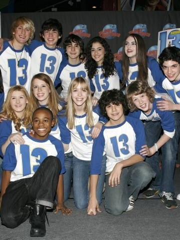
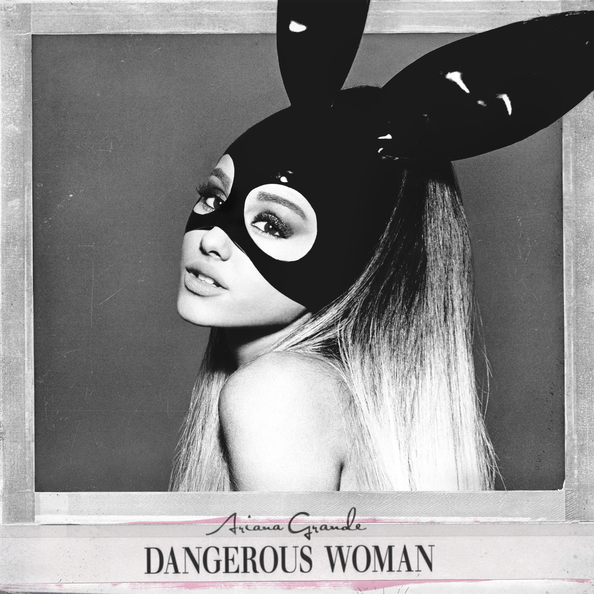
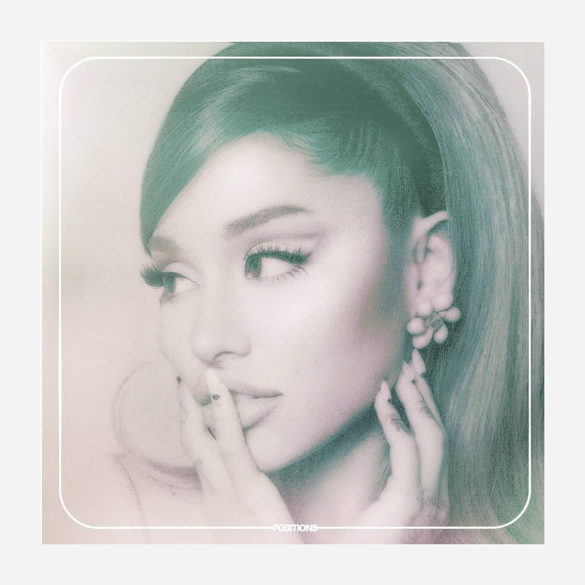
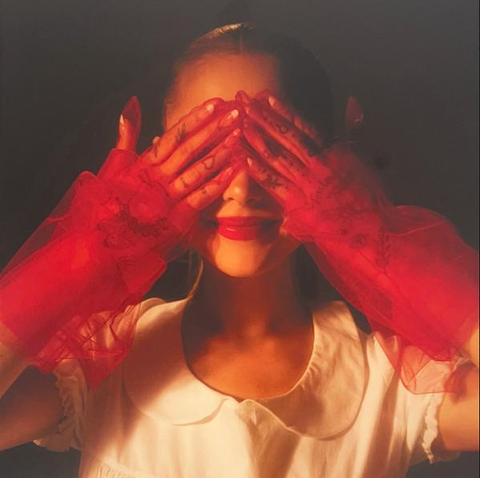
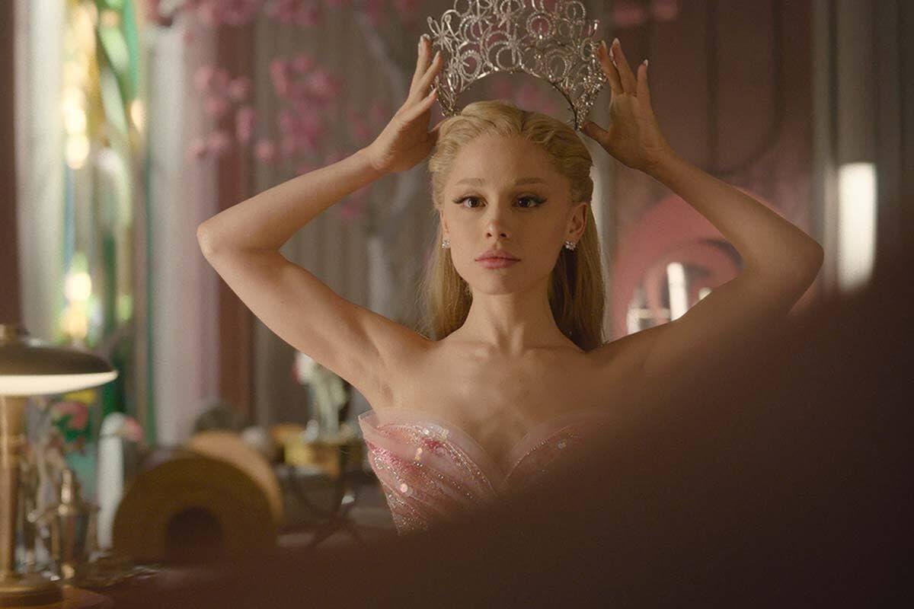

Cantora, compositora e atriz norte-americana

Ariana Grande-Butera nasceu em 26 de junho de 1993, em Boca Raton, na Flórida, Estados Unidos.
Filha de Joan Grande e Edward Butera, ela demonstrou interesse pelas artes desde muito pequena, especialmente
pelo canto, pela atuação e pelo teatro musical. Durante a infância, participou de apresentações teatrais e
eventos musicais, desenvolvendo suas habilidades artísticas.
Antes de alcançar a fama internacional, Ariana já participava de produções teatrais e apresentações locais.
Seu interesse pela música e pelo entretenimento a levou a buscar oportunidades profissionais ainda na adolescência,
dando início a uma trajetória que posteriormente a transformaria em uma das artistas mais conhecidas da música pop.



A carreira profissional de Ariana começou a ganhar destaque em 2008, quando ela interpretou Charlotte na produção da Broadway do musical 13.
Sua atuação chamou a atenção para seu talento e abriu portas para novas oportunidades no entretenimento.
Em 2010, Ariana passou a interpretar Cat Valentine na série adolescente Victorious , exibida pela Nickelodeon. A personagem, conhecida por sua personalidade
divertida e seu jeito peculiar, tornou-se muito popular entre os espectadores. Com o sucesso da série, Ariana conquistou uma grande base de fãs.
Em 2013, ela voltou a interpretar Cat Valentine na série Sam & Cat, ao lado de Jennette McCurdy. Embora a atuação tenha sido importante para sua
popularidade, Ariana também desejava desenvolver uma carreira musical independente, o que a levou a concentrar cada vez mais seus esforços na música.



Em 2011, Ariana começou a trabalhar em suas primeiras gravações musicais, enquanto ainda participava de produções televisivas. Em 2013,
lançou seu primeiro álbum de estúdio, Yours Truly, que apresentou ao público sua identidade musical, marcada pela influência do pop e do R&B.
O single “The Way”, com participação do rapper Mac Miller, ajudou a impulsionar sua carreira como cantora.
O sucesso de seu primeiro álbum abriu caminho para o lançamento de My Everything, em 2014. O disco trouxe sucessos como “Problem”, com
Iggy Azalea, “Break Free”, com Zedd, e “Love Me Harder”, com The Weeknd. Essas músicas ampliaram sua presença internacional e consolidaram sua transição de
atriz adolescente para estrela da música pop.
Em 2016, Ariana lançou Dangerous Woman, seu terceiro álbum de estúdio. O trabalho apresentou uma sonoridade mais madura e destacou canções
como “Into You”, “Side to Side”, com Nicki Minaj, e a faixa-título “Dangerous Woman”. Nessa fase, a cantora passou a explorar novas possibilidades vocais e visuais,
desenvolvendo uma identidade artística própria.



Em 2018, Ariana lançou Sweetener, álbum que marcou uma nova etapa de sua carreira.O projeto apresentou
músicas como “No Tears Left to Cry”, “God Is a Woman” e “Breathin”. O disco recebeu reconhecimento da indústria musical e venceu o Grammy de
Melhor Álbum Vocal de Pop em 2019.
No mesmo ano, a cantora enfrentou acontecimentos pessoais difíceis e a repercussão do atentado ocorrido em
seu show em Manchester, na Inglaterra, em 2017. Em meio a essas experiências, continuou trabalhando e lançou, em fevereiro de 2019,
o álbum Thank U, Next. O trabalho abordou experiências pessoais, amadurecimento
e relacionamentos, trazendo sucessos como “Thank U, Next”, “7 Rings” e “Break Up with Your Girlfriend, I'm Bored”.
Em 2020, Ariana lançou Positions, que explorou elementos do R&B contemporâneo e do pop.
Entre suas faixas mais conhecidas estão “Positions”, “34+35” e “pov”. Nesse período, também realizou colaborações importantes,
como “Rain on Me”, com Lady Gaga, e “Stuck with U”, com Justin Bieber. Essas parcerias demonstraram sua versatilidade e ampliaram ainda mais seu alcance musical.



Após alguns anos concentrada em outros projetos, Ariana retornou à música em 2024 com o lançamento de Eternal Sunshine.
Seu sétimo álbum de estúdio apresentou uma sonoridade que combina pop e R&B com letras reflexivas sobre relacionamentos, mudanças pessoais e autoconhecimento.
O álbum inclui as músicas “Yes, And?”, “We Can't Be Friends (Wait for Your Love)” e “The Boy Is Mine”.
O projeto alcançou o primeiro lugar da parada norte-americana Billboard 200, enquanto seus singles também conquistaram posições de destaque. Em 2025,
Ariana lançou a edição ampliada Eternal Sunshine Deluxe: Brighter Days Ahead, acompanhada de novas músicas e de um curta-metragem que expandiu o universo visual do álbum.
Em 2026, a cantora lançou Petal , seu oitavo álbum de estúdio, ampliando sua discografia e iniciando uma
nova etapa artística. O lançamento reforçou a continuidade de sua carreira musical após seu retorno ao cinema e aos palcos.



Em 2024, Ariana voltou a ganhar destaque como atriz ao interpretar Glinda, a Bruxa Boa, no filme Wicked.
A produção é uma adaptação cinematográfica do famoso musical da Broadway e apresenta uma nova perspectiva sobre a história do universo de Oz. Ao lado de
Cynthia Erivo, que interpreta Elphaba, Ariana participou de uma produção que alcançou grande repercussão internacional.
A interpretação de Glinda representou um marco importante em sua trajetória como atriz. Para o papel, Ariana
combinou atuação, canto e preparação para uma personagem conhecida por sua personalidade expressiva e seu estilo característico. Seu desempenho recebeu indicações a
importantes premiações cinematográficas, incluindo o Oscar de Melhor Atriz Coadjuvante.
Em 2025, ela voltou ao papel na continuação, Wicked: For Good. Os dois filmes marcaram uma fase importante de sua carreira,
aproximando novamente a artista do teatro musical, área em que iniciou sua trajetória profissional.